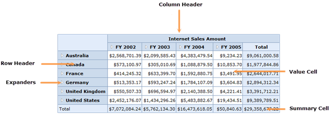

The OlapGrid control is a tool which is used to represent multidimensional data.
The main functionality of the OLAP grid is as follows:
· Summarizes a large amount of information and represents it in a cross-tabulated form.
· Automatically displays the retrieved OLAP data by data binding to an OlapDataManager.
· Renders the results of an OLAP query in a cross-tabulated UI.
· Provides drill-down and drill-up functionality.

Figure 1: OlapGrid Control
Key Features
The important features of the OlapGrid control are as follows:
· Drill Up/Down—Provides multi-level drill-up/down capability for both column and row headers.
· Layouts—Supports different grid layouts (normal layout, Excel-like layout, Excel-like layout with member properties, normal top summary, and no summaries layout).
· Relational Data Binding—Supports binding IList and DataTable-type data sources.
· Conditional Formatting—Conditionally format grid cells.
· Export—Export the grid to Excel, PDF, and Word formats.
User Guide Organization
The product comes with numerous samples as well as an extensive documentation to guide you. This user guide provides detailed information on the features and functionalities of the OlapGrid control. It is organized into the following sections:
· Overview—This section gives a brief introduction to our product and its key features.
· Deployment—This section elaborates on the install location of the samples, license, and so on.
· Getting Started—This section guides you on getting started with BI applications, the OlapGrid control, and so on.
· Concepts and Features—The features of OlapGrid control are illustrated with use case scenarios, code examples, and screenshots.
Document Conventions
The following conventions will help you to quickly identify the important sections of information while using the content.
Table 1: Document Conventions
|
Convention |
Icon |
Description |
|
Note |
|
Represents important information |
|
Example |
Example |
Represents an example |
|
Tip |
|
Represents useful hints that will help you in using the controls/features |
|
Additional Information |
|
Represents additional information on the topic |
 Note:
Note: